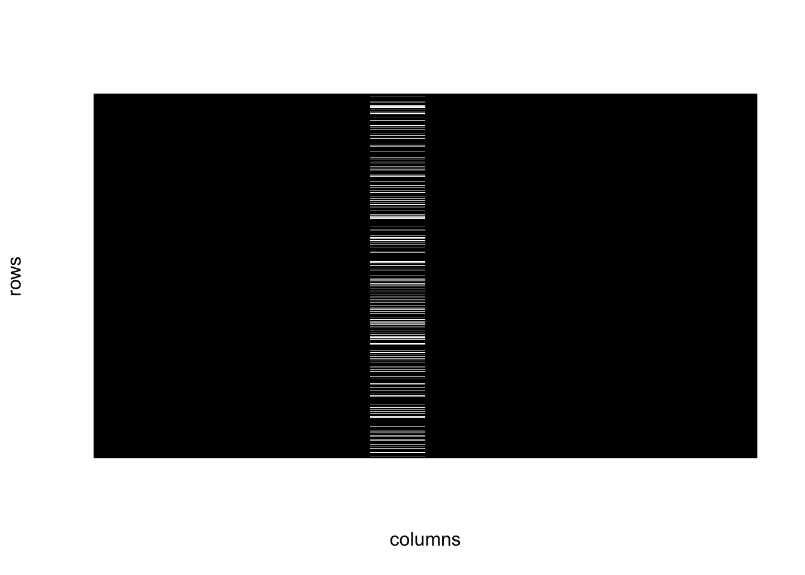
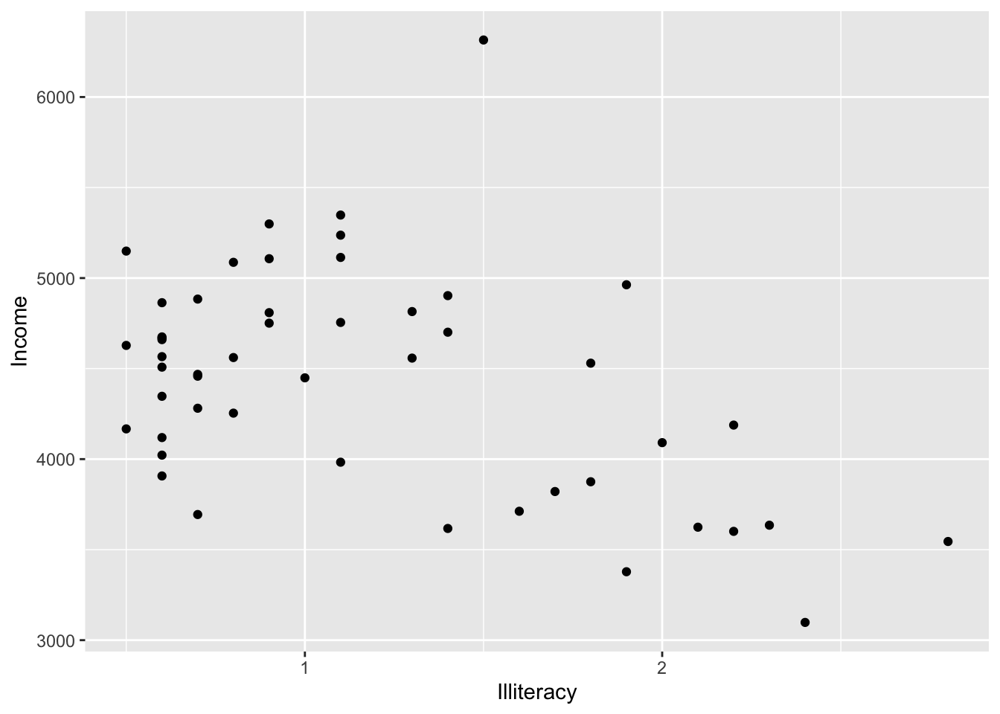
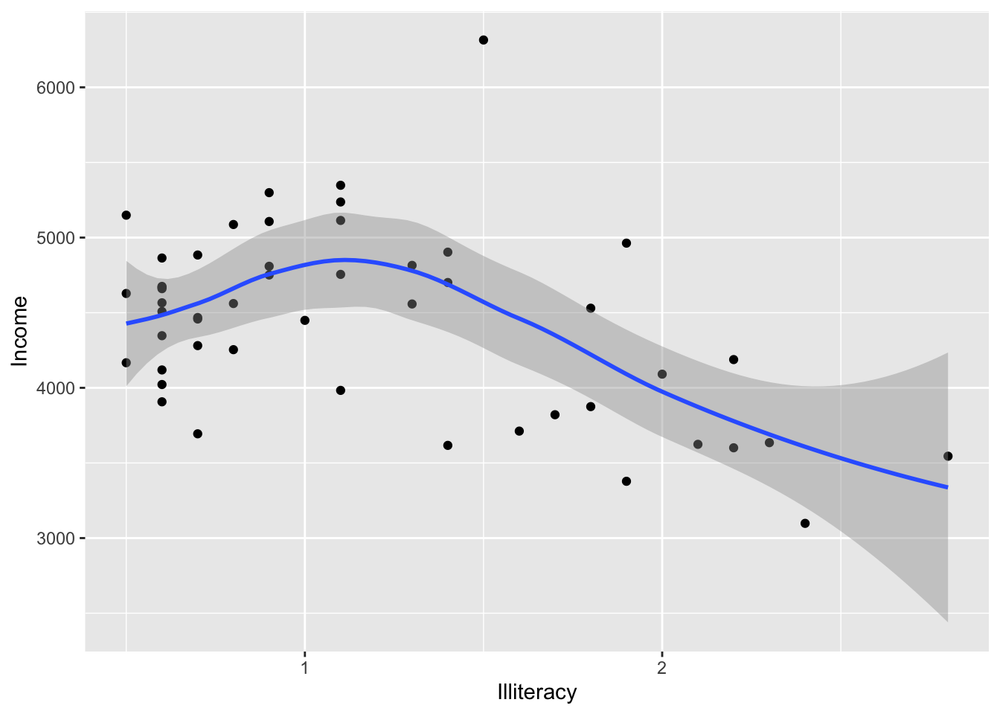
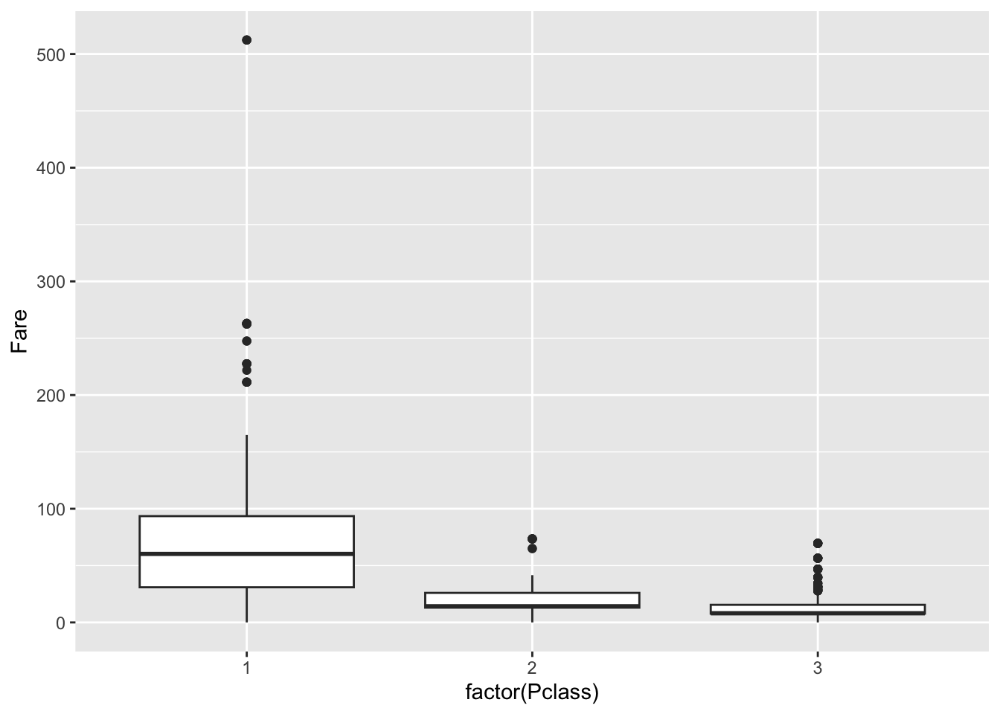
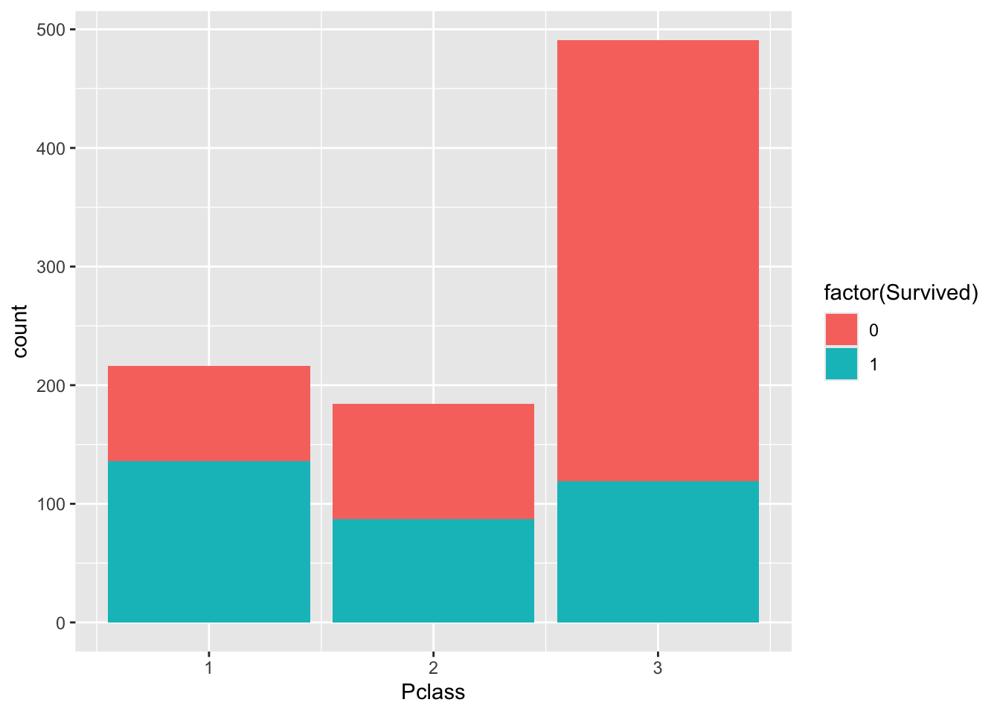
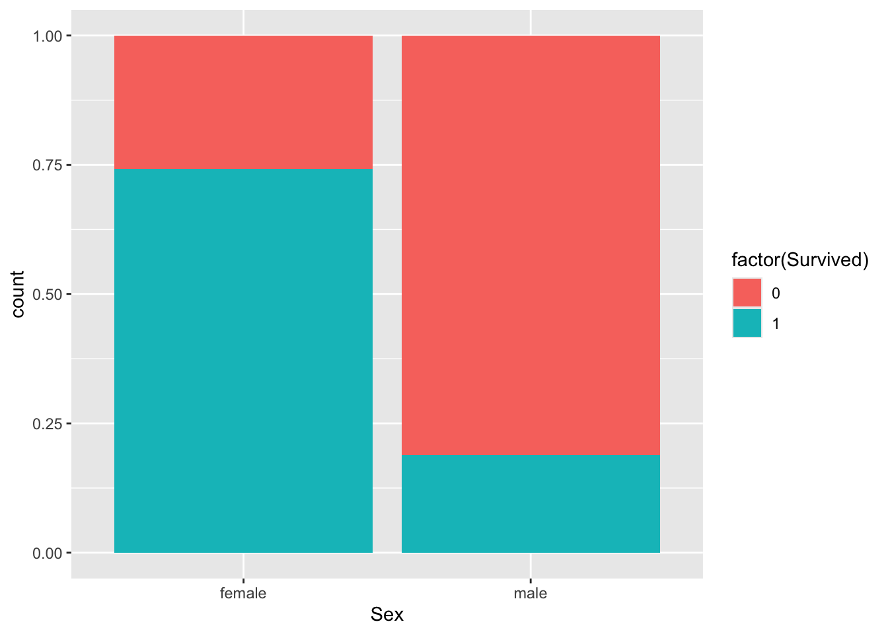
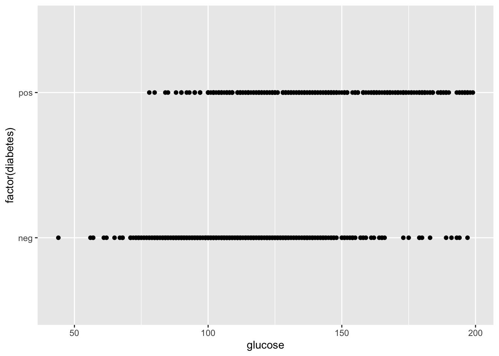

Module 3: Generalized Linear Models
In this module we’re going to cover:
- Reading data from files and evaluating missingness
- Creating publication-quality plots with
ggplot2 - Fitting models with binary outcomes using generalized linear models
Essential R: Read tables from files and merge
For this we’re going to use two data files available in the course data directory.
Download these for use and put them in your R working directory.
tomerge1.csv: comma-separated valuestomerge2.txt: space-delimited values
Use read.delim() to read in tables. Note the use of the sep= parameter to indicate what the column separator is:
## Sample_ID Exposure Biomarker_value
## 1 A 0 35
## 2 B 0 22
## 3 C 0 91
## 4 D 0 3
## 5 E 1 56
## 6 F 1 37## sampleID Exposure_level
## 1 A 0.65405517
## 2 B 0.67202852
## 3 C 0.88646372
## 4 D 0.28433256
## 5 E 0.04166839
## 6 F 0.45263534
## Biomarker2_detected
## 1 1
## 2 0
## 3 1
## 4 0
## 5 0
## 6 1Use merge() to combine the two tables by sample ID. Note the use of by.x and by.y to tell merge() which columns are equivalent:
## Sample_ID Exposure Biomarker_value
## 1 A 0 35
## 2 B 0 22
## 3 C 0 91
## 4 D 0 3
## 5 E 1 56
## 6 F 1 37
## Exposure_level Biomarker2_detected
## 1 0.65405517 1
## 2 0.67202852 0
## 3 0.88646372 1
## 4 0.28433256 0
## 5 0.04166839 0
## 6 0.45263534 1Read data from files and explore variable distribution
We’re going to use a popular dataset for data analysis, pertaining to survival of passengers aboard the Titanic.
Download the dataset here and copy it into your working directory.
Let’s read in the data from a file:
Examine the columns:
## PassengerId Survived Pclass
## 1 1 0 3
## 2 2 1 1
## 3 3 1 3
## 4 4 1 1
## 5 5 0 3
## 6 6 0 3
## Name
## 1 Braund, Mr. Owen Harris
## 2 Cumings, Mrs. John Bradley (Florence Briggs Thayer)
## 3 Heikkinen, Miss. Laina
## 4 Futrelle, Mrs. Jacques Heath (Lily May Peel)
## 5 Allen, Mr. William Henry
## 6 Moran, Mr. James
## Sex Age SibSp Parch Ticket
## 1 male 22 1 0 A/5 21171
## 2 female 38 1 0 PC 17599
## 3 female 26 0 0 STON/O2. 3101282
## 4 female 35 1 0 113803
## 5 male 35 0 0 373450
## 6 male NA 0 0 330877
## Fare Cabin Embarked
## 1 7.2500 S
## 2 71.2833 C85 C
## 3 7.9250 S
## 4 53.1000 C123 S
## 5 8.0500 S
## 6 8.4583 QSome of the columns are categorical, use table() to look at the tallies:
Examine the columns:
##
## 0 1
## 549 342##
## 1 2 3
## 216 184 491Use summary() to look at continuous-valued data:
## Min. 1st Qu. Median Mean 3rd Qu.
## 0.42 20.12 28.00 29.70 38.00
## Max. NA's
## 80.00 177Notice that there are 177 NA (missing) values for age.
Let’s visualize the missing data more systematically.
Explore missing data
For this let’s use a little script that converts a table into black and white squares to visualize missing data. For this, install the plotrix package
if (!requireNamespace("plotrix", quietly = TRUE)) install.packages("plotrix")
suppressMessages(require(plotrix))
#' show data missingness as a chequered matrix
#'
#' @param x (matrix) data matrix.
#' @param outFile (char) path to file for printing graph
#' @param wd (numeric) width in inches
#' @param ht (numeric) height in inches
#' @return plots missingness matrix to file
#' @import plotrix
#' @export
plotMissMat <- function(x,xlab="columns",
ylab="rows",border=NA) {
x <- !is.na(x)
class(x) <- "numeric"
color2D.matplot(x,show.values=FALSE,axes=FALSE,
cs1=c(1,0),cs2=c(1,0),cs3=c(1,0),border=border,
cex=0.8,
xlab=xlab,ylab=ylab)
}Let’s look at the missingness in the Titanic dataset. Missing data is shown as a white cell, and non-missing data is shown in black.

We can see a column with many missing values. This is probably the “age” data. Let’s count the number of missing values on a per-column level.
For this we combine is.na(), which returns a TRUE/FALSE value for NA values, and colSums() which adds up the TRUE values down the columns.
## PassengerId Survived Pclass
## 0 0 0
## Name Sex Age
## 0 0 177
## SibSp Parch Ticket
## 0 0 0
## Fare Cabin Embarked
## 0 0 0This confirms that Age is the only column with missing data.
Now let’s explore the data using plots.
Create plots with ggplot2 to explore variable relationships
ggplot2 is a popular plotting package that uses an additive paradigm to build plots. The ggplot2 website is a wealth of reference information, so here we just touch on the basics to get you started.
Anytime you need to generate a specific kind of plot, the website will most likely have documentation for how to achieve it.
Let’s start by creating a scatterplot. For this let’s load a dataset measuring statistics around quality of life in US states in the late 70’s:
## Population Income Illiteracy
## Alabama 3615 3624 2.1
## Alaska 365 6315 1.5
## Arizona 2212 4530 1.8
## Arkansas 2110 3378 1.9
## California 21198 5114 1.1
## Colorado 2541 4884 0.7
## Life Exp Murder HS Grad Frost
## Alabama 69.05 15.1 41.3 20
## Alaska 69.31 11.3 66.7 152
## Arizona 70.55 7.8 58.1 15
## Arkansas 70.66 10.1 39.9 65
## California 71.71 10.3 62.6 20
## Colorado 72.06 6.8 63.9 166
## Area
## Alabama 50708
## Alaska 566432
## Arizona 113417
## Arkansas 51945
## California 156361
## Colorado 103766Create a base plot using the ggplot function. Then “add” a scatterplot to it. Notice that the plot has been assigned to a variable named p.
This setup is standard for ggplot2 and allows multiple visualizations to be applied to the same base plot.
We use aes to tell ggplot what the x and y axes are, and later, if we want to colour-code by a particular column.
require(ggplot2)
p <- ggplot(state.x77,
aes(x = Illiteracy,y = Income)
)
p <- p + geom_point() # scatter plot
p
Now let’s add confidence intervals:
## `geom_smooth()` using method = 'loess'
## and formula = 'y ~ x'
It looks like there is a negative relationship between illiteracy and income. We can confirm this by looking at correlation:
##
## Pearson's product-moment correlation
##
## data: x and y
## t = -3.3668, df = 48, p-value =
## 0.001505
## alternative hypothesis: true correlation is not equal to 0
## 95 percent confidence interval:
## -0.6378257 -0.1807128
## sample estimates:
## cor
## -0.4370752## [1] 0.001505073Let’s now examine categorical variables. In the titanic set, let’s look at the fare paid based on passenger class:

We can use barplots to examine counts and proportions. Let’s look at number of survivors, split by passenger class

The plot above shows count data. Let’s convert this to proportions. We can see that the fraction of non-survivors in “Class 3” is high.

How about males versus females?

Fit binary response variable using glm() and logistic regression
Let’s fit a model to a binary outcome. For this we load a dataset that measures physiological variables in a cohort of Pima Indians.
## Loading required package: mlbenchdata(PimaIndiansDiabetes2)
# type ?PimaIndiansDiabetes2 to learn more about the dataset.
dat <- PimaIndiansDiabetes2
head(dat)## pregnant glucose pressure triceps
## 1 6 148 72 35
## 2 1 85 66 29
## 3 8 183 64 NA
## 4 1 89 66 23
## 5 0 137 40 35
## 6 5 116 74 NA
## insulin mass pedigree age diabetes
## 1 NA 33.6 0.627 50 pos
## 2 NA 26.6 0.351 31 neg
## 3 NA 23.3 0.672 32 pos
## 4 94 28.1 0.167 21 neg
## 5 168 43.1 2.288 33 pos
## 6 NA 25.6 0.201 30 negLet’s look at the impact of blood glucose levels on diabetes diagnosis. First let’s make a scatterplot.
Could there be a relationship?
## Warning: Removed 5 rows containing missing values
## or values outside the scale range
## (`geom_point()`).
Could this be fit with a linear model?
## `geom_smooth()` using method = 'loess'
## and formula = 'y ~ x'## Warning: Removed 5 rows containing non-finite
## outside the scale range
## (`stat_smooth()`).## Warning: Removed 5 rows containing missing values
## or values outside the scale range
## (`geom_point()`).
This is a situation where a logistic regression model would be an appropriate choice. We’re going to use glm() to fit a model to these data:
mod <- glm(factor(diabetes)~glucose,
dat,
family = "binomial" # set to model binary outcome
)
summary(mod)##
## Call:
## glm(formula = factor(diabetes) ~ glucose, family = "binomial",
## data = dat)
##
## Coefficients:
## Estimate Std. Error z value
## (Intercept) -5.715088 0.438100 -13.04
## glucose 0.040634 0.003382 12.01
## Pr(>|z|)
## (Intercept) <2e-16 ***
## glucose <2e-16 ***
## ---
## Signif. codes:
## 0 '***' 0.001 '**' 0.01 '*' 0.05 '.'
## 0.1 ' ' 1
##
## (Dispersion parameter for binomial family taken to be 1)
##
## Null deviance: 986.70 on 762 degrees of freedom
## Residual deviance: 786.56 on 761 degrees of freedom
## (5 observations deleted due to missingness)
## AIC: 790.56
##
## Number of Fisher Scoring iterations: 4Which factors explain a diabetes diagnosis?
What if we include a couple other factors?
mod <- glm(factor(diabetes)~ glucose + pregnant + age + pressure + triceps,
dat,
family = "binomial")
summary(mod)##
## Call:
## glm(formula = factor(diabetes) ~ glucose + pregnant + age + pressure +
## triceps, family = "binomial", data = dat)
##
## Coefficients:
## Estimate Std. Error z value
## (Intercept) -7.6685706 0.8451262 -9.074
## glucose 0.0365926 0.0041105 8.902
## pregnant 0.0972493 0.0417560 2.329
## age 0.0249707 0.0135945 1.837
## pressure -0.0009321 0.0099322 -0.094
## triceps 0.0420045 0.0117044 3.589
## Pr(>|z|)
## (Intercept) < 2e-16 ***
## glucose < 2e-16 ***
## pregnant 0.019860 *
## age 0.066235 .
## pressure 0.925230
## triceps 0.000332 ***
## ---
## Signif. codes:
## 0 '***' 0.001 '**' 0.01 '*' 0.05 '.'
## 0.1 ' ' 1
##
## (Dispersion parameter for binomial family taken to be 1)
##
## Null deviance: 678.40 on 533 degrees of freedom
## Residual deviance: 494.38 on 528 degrees of freedom
## (234 observations deleted due to missingness)
## AIC: 506.38
##
## Number of Fisher Scoring iterations: 5Note: This morning’s session only intends to introduce you to fitting non-linear models.
In practice you may need to do more work to test multiple models to ascertain best fits your data, using measures such as goodness-of-fit. You will also likely compute odds ratio (odds of increased Y per unit increase X), which is out of scope for the current tutorial.
We strongly recommend that you learn these topics before applying these methods to your own data.
Exercise
Now let’s apply the ideas above to a dataset for classifying a breast cell as being either benign or malignant.
data(BreastCancer)
bc <- BreastCancer
for (k in 2:10) # altered for current lab
bc[,k] <- as.numeric(bc[,k])
head(bc)## Id Cl.thickness Cell.size
## 1 1000025 5 1
## 2 1002945 5 4
## 3 1015425 3 1
## 4 1016277 6 8
## 5 1017023 4 1
## 6 1017122 8 10
## Cell.shape Marg.adhesion Epith.c.size
## 1 1 1 2
## 2 4 5 7
## 3 1 1 2
## 4 8 1 3
## 5 1 3 2
## 6 10 8 7
## Bare.nuclei Bl.cromatin Normal.nucleoli
## 1 1 3 1
## 2 10 3 2
## 3 2 3 1
## 4 4 3 7
## 5 1 3 1
## 6 10 9 7
## Mitoses Class
## 1 1 benign
## 2 1 benign
## 3 1 benign
## 4 1 benign
## 5 1 benign
## 6 1 malignantLearn more about the dataset:
For your exercise, answer the following questions:
- Is there missing data?
- Which columns are
- Use plots to explore the relationship between explanatory variables.
- Fit a logistic model to identify which factors explain class (benign vs. malignant).